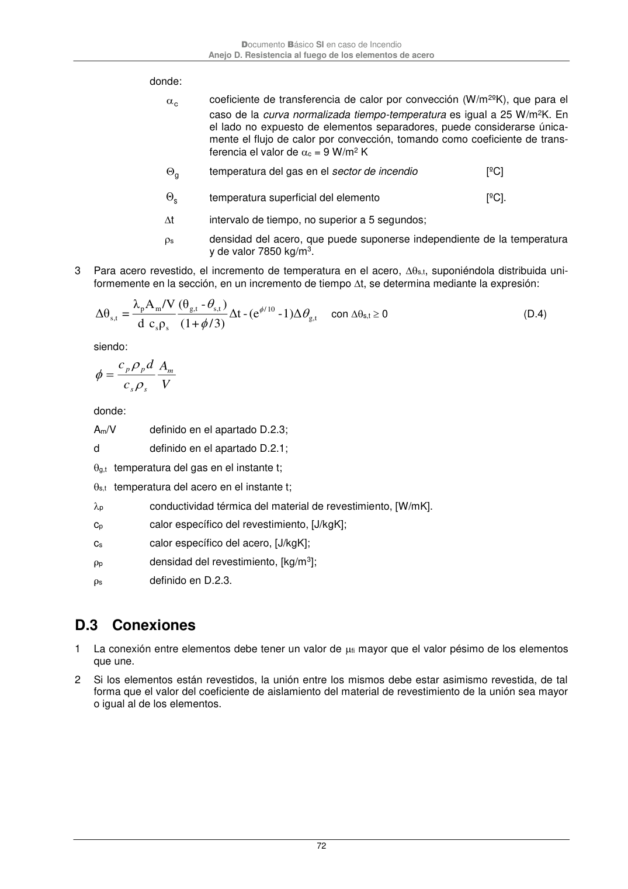

DB-SI Seguridad en caso de incendio · edición 2025-03-04 · capa oficial
Documento DB-SI-oficial · SHA-256 del PDF 0a2e78cd62471d9cc5cfe2efbc6aa39fdbad73c124aea7b039f9de96c141e105
Copia fiel del PDF fuente · Fuente oficial
Ficha de la disposición en la fuente oficial
Formatos: JSON del segmento · Markdown
D.3 Conexiones 1 La conexión entre elementos debe tener un valor de fi mayor que el valor pésimo de los elementos que une. 2 Si los elementos están revestidos, la unión entre los mismos debe estar asimismo revestida, de tal forma que el valor del coeficiente de aislamiento del material de revestimiento de la unión sea mayor o igual al de los elementos. V A c d c m s s p p
